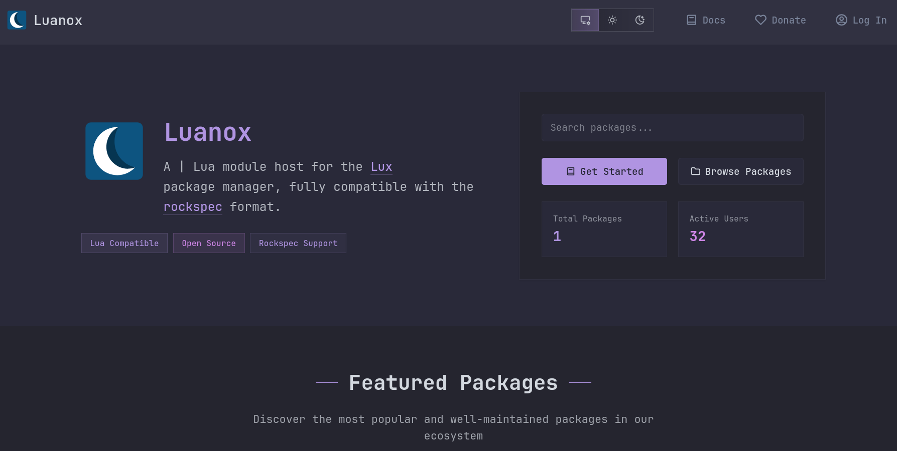

A few months ago, I posted an introduction to Lux, a modern package manager for Lua that treats Neovim and Nix as first-class citizens and is compatible with the LuaRocks ecosystem.
We have a few updates to share.
Lumen Labs
Up until recently, we had been working under a temporary GitHub org: nvim-neorocks.
We have now formalized as a proper open-source organization. You can find us under the name “Lumen Labs” (definitely not an evil corporation). If you resonate with our mission, we’ve also set up an OpenCollective.
We aim to up our transparency with more blog posts, a higher rater of public announcements and status updates, and more.
Luanox
A frequent question we received when we announced Lux was: “Why is it not written in Lua?”1
Well, NTBBloodbath and Vhyrro have been writing lots of Elixir to build Luanox, a work-in-progress modern hosting site for Lua packages, in the spirit of crates.io or PyPI.
Waiting on luarocks.org to return a massive manifest file, just so we can check if a single package exists, is taking up about 50 % of Lux’s runtime for basic package management operations. For this reason, we wanted to create something snappy, secure and new, while still retaining compatibility:
- Licensed under AGPL-3.0.
- No storage of persistent information that could be leaked (no passwords; stateless JWT tokens).
- A custom service that runs in a separate container and verifies that rockspecs do not do anything malicious.
- Immutable packages2.
- Uses OpenAPI.
- On the roadmap: 2FA for package uploads and facilities for recovering from an account takeover.
The site itself doesn’t store any persistent information that could be leaked.
We’re currently hosting a beta version of the site over at https://beta.luanox.org. On the Lux side, we’re also working on integrating the site so people can start uploading test packages there! Once we’re confident in the site’s performance, we’ll move all the data over to the final product.
In the meantime, feel free to try making an account. Beta users will get a special badge in the final release :D

Lux updates
With the help of users, who have been rigorously testing and contributing to Lux, we’ve squashed many bugs and significantly upped compatibility with luarocks packages.
Some notable new features since the previous announcement:
- Lux is now licensed under LGPL-3.0-or-later.
- Static type checking based on LuaCATS annotations,
powered by
emmylua-analyzer-rust. With knowledge of your project’s dependencies,lux-clican generate a.luarc.jsonfor use by the type checker and a language server. - A
busted-nluatest backend for easily runningbustedtests with Neovim as the Lua interpreter. - For packages that haven’t been released to luarocks yet, the
lux.tomlformat now lets you specify Git dependencies. - A templating system that lets you configure how Lux injects source and version information into generated rockspecs.
- We now publish pre-built binary artifacts for:
- Arch Linux (via the AUR)
- Debian
- AppImage (Linux)
- macOS (arm64)
- Windows (x64, MSVC)
lux-luabindings API for all supported Lua versions.
Our next steps
Ecosystem support in Luanox
Our project was born out of efforts to start pushing luarocks adoption in the Neovim ecosystem. One complaint we’ve heard about this from the community is that uploading Neovim-only packages to a generic Lua registry feels weird. For this reason, we will be adding special concepts that will make publishing Neovim plugins to a central Lua registry feel less “hacky” and more deliberate. We’ll be revamping luarocks’s old concept of manifests and turning them into an easy way to distinguish Lua packages specifically built for a given platform (Neovim, Nginx, etc.), with dedicated search pages just for those manifests! We are also working on a dedicated compatibility layer to make the luarocks CLI also work with Luanox :)
Lux and lux.nvim
On the Lux side, we will update Lux to use Luanox as its main server, falling back to luarocks.org for now. Due to a LuaJIT bug, our lux.nvim rewrite of rocks.nvim is unfortunately on hold while we wait for luarocks.org to support serving zipped JSON manfiests. But we will pick it up again as soon as possible!
Thank you
We’d like to express our heartfelt gratitude for all the tremendous support we have received in making Lua better for everyone. Thanks to the OpenCollective donations we’ve now been able to purchase a dedicated domain. And without all of the bug reports and external contributions, Lux wouldn’t even be close to where it is now!
To address this: Lua is fantastic as a scripting language. But the compile time guarantees provided by Rust’s expressive type system make it a far better choice for a project of Lux’s scope. The Rust ecosystem, thanks to Cargo, offers powerful tooling that makes it ideal for writing a package manager. Thanks to the
mluacrate, we can embed a Lua interpreter inlux-cliand also provide an embeddablelux-luabindings API.↩︎Meaning you can’t rug-pull or force-push an existing version maliciously.↩︎